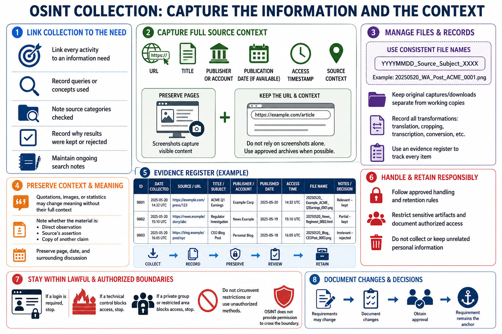

Collect and Preserve Information
Connecting to LMS... Progress: in progress

Narration
Collection should create both usable material and a trustworthy record of how it was obtained. Maintain search notes that link each activity to an information need. Record meaningful queries or concepts, source categories checked, dates, and the reason a result was kept or rejected.
For relevant pages, preserve the URL, title, publisher or account, publication date if available, access timestamp, and source context. A screenshot may capture visible content, but it should not replace the URL and surrounding context. Approved archives can help preserve pages that may change.
Use consistent file names and an evidence register. A practical name can include date, source, subject, and a unique identifier. Keep original downloads or captures separate from working copies when integrity matters. Record transformations such as translation, cropping, transcription, or format conversion.
Preserve enough context to avoid misleading excerpts. A quotation, image, or statistic may change meaning when separated from its page, date, or prior discussion. Note whether the material is a direct observation, a source's assertion, or a copy of another claim.
Follow approved handling and retention rules. Restrict sensitive artifacts, protect storage, and document who may access the case material. Do not preserve unrelated personal information simply to make the collection appear comprehensive.
Collection must remain within lawful public access and authorized methods. If a login, technical control, private group, or explicit restriction blocks access, stop and seek guidance. OSINT does not provide permission to circumvent the boundary.